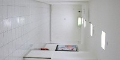
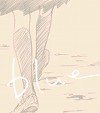
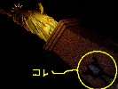

strange music page
* * * 2003.3
-2003.3.25 All White
 |
#眠い。
なんだコレ？ なんかの実験にウチのサイト使ってるんなら、見えないようにしてやってほしいなぁ。
ダブルスタンダードってのはこーゆーのとかこーゆー事を言うんですね。投降イラク兵の写真は沢山見たんだけど、あれは捕虜じゃないのかな？
|
♪チャクラ/金太郎
-2003.3.22 Lars Hollmer's SOLA
#まぁ今日はLars Hollmer's SOLAが有った訳ですが、コレを見に行ってしまうと非常に厳しいことになるので自粛しようと思ってました、17時位までは。
なんか丁度そんなタイミングで会社から「サーバのトラブルがごにょごにょ・・・」と、とりあえず行って直してみて報告して、丁度19時に青山一丁目。
神様に「ゴー」って言われてるよーな気がしたんで表参道で降りて行っちゃいました。
この編成のライヴを見るのは都合3度目ですけど、よーやく名実共にバンドの音になったなーと思いました。アンコール曲とか（曲名が覚えられないのだが）何度聴いてもゾクゾクします。
メモ：弟に1万円借金。
ちなみに昨日のfeep,GPNZ@西荻窪BINSPARKも結構面白かったです。BINSPARKってBIN-SPARKなんですね、ずーっとBIN'S PARKだと思ってた。
ライヴ二連荘かよ、貧乏なくせに。
あ、そうだS○NYのポータブルCDプレイヤーとポータブルMDが相次いで壊れました。現在ダブルで修理中（CDの方は保証期間中だから良かったけど）最近の電子機器の寿命が短いのは、部品一つ一つが物凄く壊れ易くなってるでしょうか？別にそんなに小さくなくてもイイし、多機能でなくてもイイから、とにかく簡単に壊れないようなモノが欲しいっすよ。
♪Ken Field/Katsui Yuji/Kido Natsuki/Shimizu Kazuto
-2003.3.21
#今日(3/21)分の音楽配信メモの今回の戦争についてのコメントに非常に共感。
「もっと、シンプルな結論でいいじゃん。少なくとも世界の半分以上の国が一方的な攻撃に反対している状況なんだから、戦争を始めた米国に対して、「攻撃をやめろよ」って言おうよ。」
ってのが、言いたかったけど言葉に出来なかった事を言ってくれたようで嬉しかった。
色々な事を散々考えた挙句が「戦争に賛成するしかない」ってんなら、何処に出口が有るんだろう？とか思います。
西荻のビンスパークにfeepとGPNZのライヴ見に行ってきました、レポ後で。
♪john renbourn/at the break of day
-2003.3.19
#買う予定の新譜
- Electric-brain Featuring Astroboy (4.7)
- 鉄腕アトムトリビュート。ROVO,KEN ISHII,REI HARAKAMI,CHARI CHARI,細野晴臣など。
- オパビニア (4.18)
- 清水一登+鬼怒無月+芳垣安洋。当然、当たり前、買うに決まってる。2枚買ってもイイくらい。
- 空気公団/こども (4.20)
- 久々、coa recoordsってことは、Toy'sとの契約はどーなったんだろう？
#どーでもイイけど、ウェブで同じ名前の人見つけた「しまうま製作所」って所、しかも音楽系。プロフィールの好きな音楽の中の航空電子、SKYFISHER、ソウルフラワーユニオン、dipってあたりにかすかにシンパシー。
♪monkees/this just doesn't seem to be my day
-2003.3.18 100円×3
#帰り際に地元の中古CD屋の「1枚100円」という文字が目に付いて。3枚。
- 「沖野俊太郎/The Spiritual Rising」 (1995)
- 昔Venus Peter、今Indian Ropeの沖野俊太郎さんの95年のマキシシングル。すこぶるギターポップ、好きなんだけど今聴いてるとちょっと恥ずかしくなってくる。
- 「Kostars/Klassics with AK」 (1995)
- GRAND ROYALからのリリース。チボマットとかにも似たセンスかな？大体中古で500円以下で売ってると思います。Luscious Jackson（聴いたこと無いけど）の別ユニットらしいです。ん、全然良いです。
- 「Yximaloo/Kitsch Shaman」 (1982)
- マヘルとか・・エアブリなんかにも近いような気もします。脱力サイケノイズというか、未知の音楽 from 南伊豆。ここが半オフィシャルかな？ハーフジャパニーズのジャド・フェアとかと一緒にやってる人みたい。1982年なんてローファイなんて言葉も無かったろうに。そーいえばハーフジャパニーズ来日するんだよね。
#久々に風邪をひいて病院に行きました。やっぱりこの鼻水は花粉のせいじゃなかったみたい。
#戦争反対。絶対反対。
♪Kostars/hey cowboy
-2003.3.16 一日中眠い
#そいえば元Hzの秋元きつね（せがれいじりとかの人）のやってる「バカ」ってユニットのライヴが4/19に有るみたい。サンプルmp3かっちょよかった、ドラム無しなのはちょっとアレだけど、見に行ってみよう。
あとこないだの大友良英のライヴレポに感想文を追加。
試験的にウチの全ページのアクセスログを取ってたんだけど、めんどくさくなってやめちゃいました。ロボット型の検索エンジンからのアクセスが90%くらい・・・。まぁ「調べモノのページ」とは思ってるんですけど、ちょっと寂しい気もするわな。
近況：生活に支障が出ているのではないかと思われるほどにやる気の無い毎日が続いてるみたい。
♪あらきなおみ/狛犬と草いきれ
-2003.3.11 Rachel's (TOYOTAの車らしい)
#っていうシカゴとかルイヴィルで活動してるバンドが有るみたいで（弟に聴かせてもらった）、物凄く綺麗な室内楽のような感じの音が気になって、渋谷のタワレコへ行って買ってきました。Rachel's/Selenographyってアルバム。
さっきから繰り返し繰り返し聴いてるんですけど、間違い無くコレ好きです、久々にハマリました。なんだかだんだんプログレにしか聴こえなくなってきたような気もしますが、まぁいいや。全部揃えるべくがんばります。
#今日ラジオのニュースで米の動物保護団体、タマちゃん捕獲失敗ってやってて、心の底から軽蔑しました。まぁタマちゃんはどーでもイイんですけど、自分の国がイラクと戦争して、何千も人が死ぬかもって時にわざわざ日本のアザラシ救いに来るのかよ。
余計なお世話だよ、戦争もタマちゃん捕獲も。
♪rachel's/selenography
-2003.3.9 Blue (山本直樹でもデレク・ジャーマンでもなく)
 |
#表参道CAYで「大友良英/BLUE」のサントラ発売記念のライヴを見てきました。物凄く込んでる中の前の方で見てたら頭が痛くなってきたり、まわりにやたらとウルサイ客が居たり（CAYってそーゆー客が多いように思う）。
でも「山下毅雄を斬る」の '煙の王様〜Song for T.Y.' を生で聴けて幸せでした。bandolinのアルペジオからサイン波の奔流。脳が溶けそうになったよ。(とりあえず覚えてる限りの演奏曲だけアップ)
|
♪大友良英/blue
-2003.3.8 既知との遭遇 (A close encounter with you know what)

#深夜国道14号線の幕張付近を車で爆走（ライトバン、上限80km/h）していた所、友達から電話がかかってきました。「ちょっと後ろ向いてみ？」
・・・真後ろで俺のこと煽ってる車は友達のトクタケ君でした。もう偶然とかそーゆーレベルの話では無いような。
ついでなんでお台場でお茶して自由の女神の前で写真撮ってきました。男二人。
なんか茨城辺りから週末を利用して遊びに来た大学一年生みたいな風情でしたが。（写真参照）
♪Led Zeppelin II
-2003.3.7 おめでとう自分 (happy birthday to me)
#久々に実家に帰って飯をたらふく食って食料を分けて頂くとの同時に、弟にCDを色々聴かしてもらいました。
- 「大友良英/Anode」
- キビちかったです。こーゆーコンセプト(improvised music from japan内、Anodeライナー原文)らしいんですけど、ほとんどカオス的な音の塊。
- 「Rachel's Matmos/Full on Night」
- これは良かったです、Rachel's ってちっとも知らない人たちだったんですけど(アメリカ、ルイヴィルのバンドらしい)音響とクラシックみたいな感じでとても綺麗。
- 「DORINE_MURAILLE/Mani」
- GELの人のプロジェクトらしいです。GELと似たような感触なんですけど、時々シャンソンみたいなボーカルが入ってきます。まぁまぁ。
（相談: 最近、弟の話すマニアックな音響系やらテクノの話についていけなくなりました。兄（27になった）としてどーすれば良いのでしょうか？）
♪Rachel's/Full on Night
-2003.3.6 ロンリー (it's too lonely)
#新宿PIT-INNでの新大久保「ロンリー」ジェントルメンを見てきました。元々 sax + keyboard + bass + drums + percussion というバンドだったんですが、久々のライヴではボトム(bass + drums + percussion)がごっそり抜けていました。ほんとにロンリーな感じ。
♪新大久保ジェントルメン/イゴールの嘆き
-2003.3.5 さむい (it's too cold)
#ストーブの灯油が切れてるのでとても寒いです、エアコン全然効きません。
ネット通販してた彼女の嫌いな彼女 ORIGINAL SOUNDTRACKですけど、清水一登さんの曲が4曲。特にBALLAD#3ってのが深海の底みたいな感じでとても良いー。なんて思ってたら友達のホリコシ氏から電話、最近GPNZってバンドに参加してるんですけど、3/21に西荻窪BINSPARKでライヴをやるらしく、どうも対バンはPHATのドラマーの人のfeepってバンドみたいです。サンプル面白かった、見に行ってみよう。
♪こなかりゆ/夏がやってくる
-2003.3.3 ほとらぴからっ
#2003年3月3日といえばやっぱりほとらぴからっのライヴが有る訳で。大雨でしたけど当然の如く行ってきました。
まぁ細かいことはレポの方見ていただけばいいんですけど、個人的にはこのバンド自分の中でストライクど真ん中なバンドです。なんかあのライヴ会場に居るだけで幸せなよーな気がしちゃいます今日この頃。
あ、ライヴにはホッピー神山さんとか福原まりさんとか美尾洋乃さんとか来てました。ちょっとだけ福原まりさんと喋ってみた。
♪ほとらぴからっ/天女
-2003.3.1 急に晴れる。
#なんだか馬鹿みたいに晴れた一日でした、イイ日だったなぁ。表参道のSPIRALのCD屋さんで大友良英/blueを購入、ついでに3/9のライヴを予約。
♪大友良英/painting 2 (quartet)